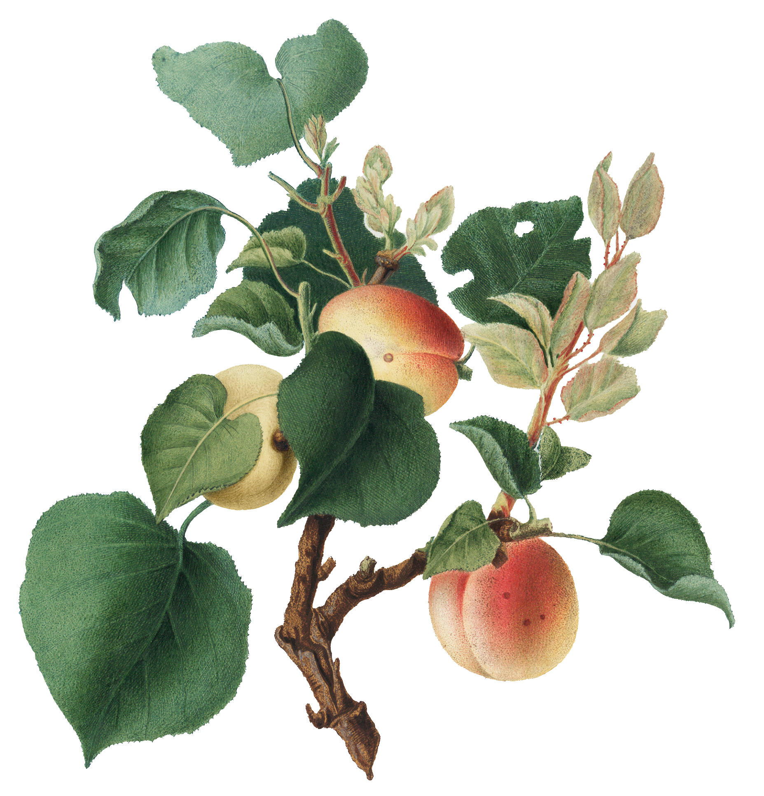
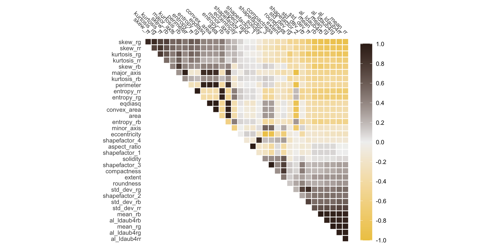

tidymodels
- Consistent
- Modular
- Extensible


tidymodels
Models have outcomes
Clearly defined predict()
Easy to estimate performance
tidyclust
Models doesn’t have outcomes
Not clearly defined predict()
No clear answer


Date Fruit Data


Specifying a clustering model

Specifying a clustering model
Specifying a clustering model
cluster assignment + clusters + prediction

extract_cluster_assignment(kmeans_fit)
#> # A tibble: 898 × 1
#> .cluster
#> <fct>
#> 1 Cluster_1
#> 2 Cluster_2
#> 3 Cluster_1
#> 4 Cluster_2
#> 5 Cluster_2
#> 6 Cluster_2
#> 7 Cluster_1
#> 8 Cluster_2
#> 9 Cluster_1
#> 10 Cluster_1
#> # … with 888 more rows
#> # ℹ Use `print(n = ...)` to see more rowscluster assignment + clusters + prediction
extract_centroids(kmeans_fit)
#> # A tibble: 5 × 7
#> .cluster PC1 PC2 PC3 PC4 PC5
#> <chr> <dbl> <dbl> <dbl> <dbl> <dbl>
#> 1 Cluster_1 2.17 3.46 1.32 -0.0701 -0.493
#> 2 Cluster_2 -5.66 -1.51 0.776 0.280 -0.358
#> 3 Cluster_3 -1.98 3.33 -2.03 -1.01 1.04
#> 4 Cluster_4 3.33 -2.82 -1.04 -0.257 -0.186
#> 5 Cluster_5 1.30 -0.212 0.726 0.858 0.414
#> # … with 1 more variable: PC6 <dbl>
#> # ℹ Use `colnames()` to see all variable namescluster assignment + clusters + prediction
Metrics

Metrics
tuning

tuning
tuning
collect_metrics(res)
#> # A tibble: 10 × 7
#> num_clus…¹ .metric .esti…² mean n std_err
#> <int> <chr> <chr> <dbl> <int> <dbl>
#> 1 1 tot_wss standa… 27830. 5 119.
#> 2 2 tot_wss standa… 18828. 5 815.
#> 3 3 tot_wss standa… 12454. 5 206.
#> 4 4 tot_wss standa… 10086. 5 207.
#> 5 5 tot_wss standa… 8865. 5 190.
#> 6 6 tot_wss standa… 8236. 5 404.
#> 7 7 tot_wss standa… 7211. 5 366.
#> 8 8 tot_wss standa… 6498. 5 365.
#> 9 9 tot_wss standa… 5920. 5 355.
#> 10 10 tot_wss standa… 5918. 5 338.
#> # … with 1 more variable: .config <chr>, and
#> # abbreviated variable names ¹num_clusters,
#> # ².estimator
#> # ℹ Use `colnames()` to see all variable names